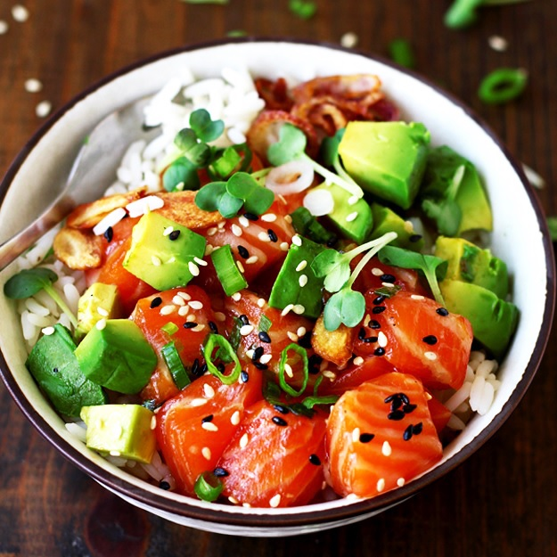

Salmon Poke Bowl
|  |
Learn how easy it is to make a salmon poke bowl! This irresistible seafood dish features Japanese-inspired flavors for a delicious gourmet meal. It’s made with marinated raw fish, and you can customize it with all your favorite ingredients. |
|
|---|---|---|
Salmon Poke |
Pickled Cucumbers |
Sriracha Mayo Sauce |
|
|
|
Steps
- Make the Salmon Poke – In a medium bowl, combine diced salmon, soy sauce, green onions, rice wine vinegar, sriracha, and sesame oil. Cover and refrigerate while making the pickled cucumbers.
- Make the Pickled Cucumbers – In a medium saucepan, combine rice wine vinegar, water, honey, salt, and chili flakes. Bring to a boil over high heat. Once boiling, turn off the heat, add cucumber slices, and stir. Marinate for 10 minutes, then transfer the cucumber mixture to a container. Cover and refrigerate until ready to use, or freeze for 5 to 10 minutes to cool quickly.
- Make the Sriracha Mayonnaise – In a small bowl, whisk the Sriracha and mayonnaise until combined.
- Assemble the Bowl – To serve, add any additional ingredients to the bowl, such as rice or salad for the base. Top with salmon poke, pickled cucumbers, and Sriracha mayonnaise.